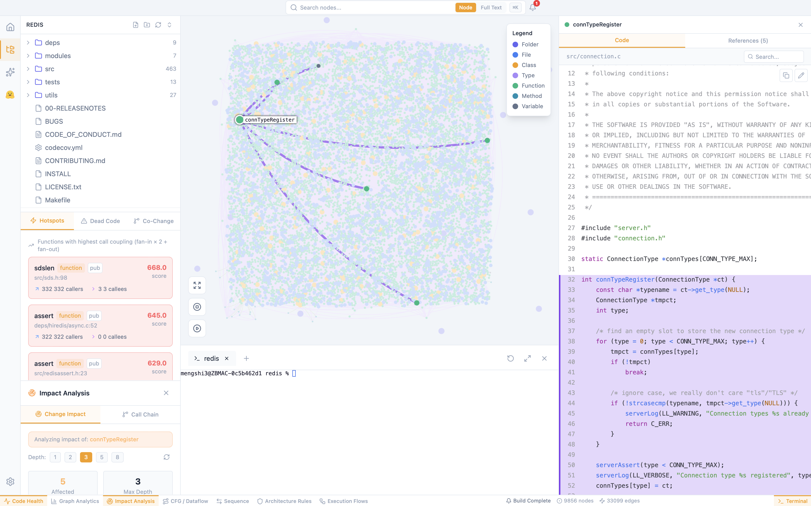

🔓 开源免费 · MIT 协议 · 永久免费商用
Axons
极致轻量的 AI-First 代码工作台
轻量为基，扩展为魂 — 秒级启动，原生AI智能，告别臃肿IDE
摒弃传统IDE臃肿冗余，自研四维智能引擎内核，AI能力原生内嵌而非外接嫁接。5位AI专家开箱即用，覆盖架构治理、技术债清理、遗留系统迭代全流程。代码不出机器，数据全链路私有化。
⚡ 极致轻量 — 秒级启动，超低内存，低配也流畅
🧠 AI 原生 — 自研智能引擎，绝非IDE套壳
🔌 开放扩展 — 插件 / MCP / Skill 按需组装
🔓 永久免费 — MIT开源，可商用可定制
支持的编程语言
JS/TS

秒级启动
AI原生
按需扩展
私有化部署